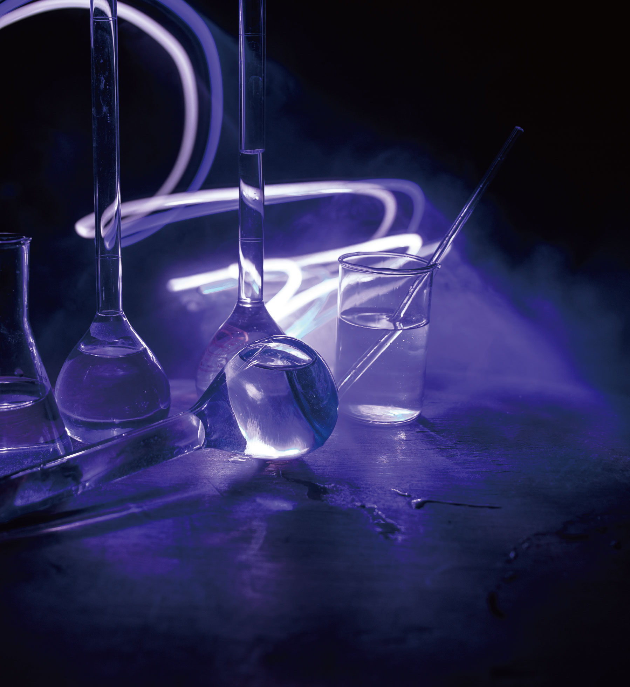

COLLEGE OF NATURAL SCIENCES • 자연과학대학

|
화학의 학문적 발전에 기여할 수 있는 전공교육
|
|
화학과
DEPARTMENT OF CHEMISTRY
|
|
 chem.ssu.ac.kr
chem.ssu.ac.kr
|
 02-820-0430
02-820-0430
|
|
학과 설립
1981 년
|
입학 정원
45 명
|
교직과정 개설여부
o
x
|
전임교원
9 명
|
학과 소개
화학은 재료, 화공, 전자, 기계, 의약학 등 광범위한 산업 부문에 파급력 있는 핵심
과학기술 학문 분야다. 이에 숭실대학교 화학과는 화학 전 분야에서 최첨단의 학술
활동을 수행하는 화학자들로 우수 교수진을 갖추고, 이론과 첨단실험장비들을 이용한
실습 교육을 균형 있게 실시해 전공지식을 충실히 갖춘 인재를 양성하고 있다. 특히
4차산업혁명 시대의 기술 수요에 대응하기 위해 나노소재 분야의 프로그램을
운영하고 있다. 그동안 배출된 졸업생은 국내외 연구 기관과 산업 현장에서 중추적
역할을 수행하고 있다.
학과 인재상
인재상: 미래에 도전하는 융복합 과학기술인
필요역량:융합형 화학 지식, 창의적 개발 능력, 화합적 협업 능력, 실무적 실험 역량
주요 커리큘럼
미적분학, 일반물리 및 실험, 일반화학 및 실험
물리화학 및 실험, 유기화학 및 실험, 분석화학 및 실험, 환경화학
무기화학 및 실험, 유기합성, 생화학, 생물리화학, 유기분석
양자나노분광응용, 기기분석, 물리유기, 단백질생화학, 생유기화학, 화학
특강, 물리화학 특강, 논문연구
선택교과 가이드
일반선택
수학Ⅰ, 수학Ⅱ, 미적분, 확률과통계, 물리학Ⅰ, 화학Ⅰ
동아리 및 소모임 소개
오비탈(학술),신우회(기독교)
학과 특색 프로그램
양자 나노융합 전공 트랙: 물리학과와의 융합 전공, 반도체 및 양자나노 재료의 합성과
분석, 융합 전공 필수 과목 및 선택 과목 이수
졸업논문 발표회: 졸업 필수 요건, 매년 4학년 학생들의 실험/논문 리뷰를 바탕으로
포스터 발표 시행
취득 가능 자격증
화학분석기사, 폐기물처리산업기사, 수질환경산업기사, 대기환경산업기사,
공업화학산업기사, 위험물산업기사
졸업 후 진로
정밀화학,석유화학, 전기·전자, 반도체분야회사의영업직또는연구직,
교육사업종사자. 중등교원, 대학교수, 국가연구소연구원
유기화학, 분자인지, 분자공학, 의약화학. 화학생물학, 구조생화학, 단백질 구조,
분광학, 나노화학, 나노다공성 소재, 나노센서, 바이오-나노과학, 나노 형광체, 전기화학,
바이오센서, 에너지소자, 생물리화학, 질량분석, 레이저-표면반응, 환경유해인자특성
Q 화학자가 되면 어떤 일을 하게 되나요?
A
화학은 화합물의 합성, 구조, 성질, 반응을 공부하고 연구하는 분야입니다.
따라서, 화합물을 다루는 다양한 산업 분야에서 일할 수 있습니다. 구체적으로 의약,
진단, 반도체, 디스플레이, 고분자, 염료, 화장품, 환경, 신재생 에너지 분야 등에서
첨단 제품 개발을 위한 연구를 수행합니다.